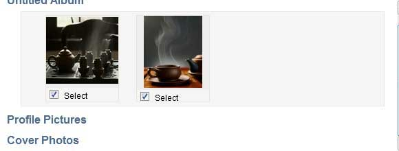

Photo upload from Facebook

Loading is in progress
Toggle all
Upload all selected
Some of your photos failed to upload?
Possibly they do not meet Yangutu requirements. For example, they may be to little or too large.